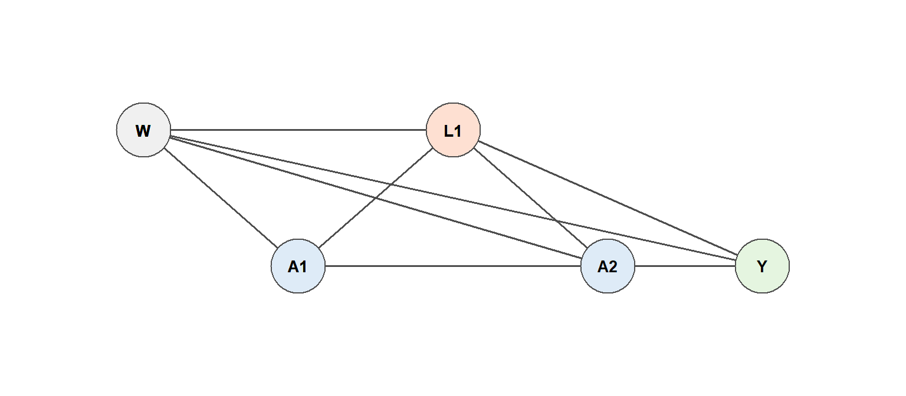

Why standard regression fails when treatment and confounders co-evolve, and what to do about it
Estimated reading time: 45 minutes
Learning objectives
Explain why time-varying confounders affected by prior treatment break standard regression, GEE, and mixed models
Identify the treatment–confounder feedback loop in a DAG and distinguish confounding paths from causal mediated paths
State the sequential versions of consistency, exchangeability, and positivity
Describe why G-methods (G-computation, IPTW, L-TMLE) are needed and how they differ from regression
Articulate the connection between static regimes, stochastic interventions, and the forgiveness curve
14 Why Longitudinal Treatments Are Different
Parts I and II of this handbook dealt with point-treatment settings: a single treatment decision at one moment, followed by an outcome. Real clinical trajectories are rarely that clean. Patients start medications, respond to them, have their health monitored, and then, on the basis of that monitoring, clinicians adjust, continue, or stop treatment. This feedback between treatment and health status repeats at every clinical visit. It is the defining feature of longitudinal treatment data, and it is what makes longitudinal causal inference fundamentally harder than the point-treatment case.
This chapter introduces the problem. We explain why time-varying confounding affected by prior treatment breaks standard regression, lay out the identification assumptions needed for longitudinal causal effects, and preview the two estimation approaches developed in the next two chapters: longitudinal TMLE (L-TMLE) and the longitudinal modified treatment policy framework (LMTP).
14.1 A familiar example first: statins and cholesterol
Before turning to the HIV setting that will carry us through the rest of these chapters, consider a simpler scenario that makes the core problem concrete.
Suppose we want to estimate the effect of sustained statin use on myocardial infarction over two years using electronic health records. At each annual visit, the clinician measures LDL cholesterol and decides whether to prescribe, continue, or stop statin therapy. LDL is clearly a confounder of the future treatment decision: high LDL makes statin prescribing more likely. But LDL is also affected by past statin use: taking statins lowers cholesterol. This means LDL plays two roles simultaneously.
It is a confounder for future treatment (it affects both next year’s prescribing and the outcome), and it is a mediator of past treatment (it lies on the causal pathway from last year’s statin use to the outcome).
Figure 14.1: Time-varying confounding in a two-year statin study. LDL at the end of year 1 is both a confounder of year-2 treatment and a mediator of year-1 treatment.
Now imagine fitting a standard regression for myocardial infarction that adjusts for current statin use and current LDL. This seems reasonable from a predictive standpoint, but causally it is a trap. By conditioning on LDL at the end of year 1, we block part of the causal pathway \(A_1 \to L_1 \to Y\) that we want to capture. But if we leave LDL out of the model, the effect of year-2 statin use (\(A_2\)) is confounded by LDL.
This is the core longitudinal problem:
A time-varying covariate can be both a confounder for future treatment and a mediator of past treatment. Standard regression cannot handle both roles at once.
The short simulation below demonstrates the bias concretely.
The coefficient on \(A_1\) is pulled toward zero because conditioning on \(L_1\) absorbs part of the effect of \(A_1\) that operates through cholesterol. This is not a coding error or a small-sample artifact; it is a structural bias that persists at any sample size.
15 The HIV Cohort: Our Running Example
The statin–LDL feedback loop has an exact parallel in HIV treatment. In people living with HIV, antiretroviral therapy (ART) raises CD4 cell counts, which in turn influence future treatment decisions and the risk of clinical events such as virologic failure. CD4 count is the canonical time-dependent confounder in this literature, and the treatment–CD4 feedback loop has been studied extensively since the marginal structural model papers of the early 2000s (e.g., Petersen et al. 2007).
We use an HIV cohort as the primary example for the rest of this chapter sequence. The clinical question we will build toward is:
What is the probability of virologic failure by 12 months under sustained high adherence to ART, compared to observed adherence patterns, adjusting for time-varying CD4 count?
The data structure at each clinic visit looks like this:
At each visit, CD4 is measured first, then adherence is recorded, then we check whether the patient is still under observation. This ordering is not arbitrary; it encodes our causal assumptions about the temporal sequence.
The feedback loop in HIV works as follows. ART adherence at visit \(t-1\) improves CD4 at visit \(t\). Higher CD4 at visit \(t\) may reduce clinical urgency, potentially affecting adherence decisions at visit \(t\). CD4 at visit \(t\) also directly affects the risk of virologic failure. The result is the same structure as the statin–LDL example, but with more clinical urgency and more time points.
16 Why Standard Regression Fails
We have already seen the problem in the statin example, but it is worth stating precisely what goes wrong and why.
16.1 The treatment–confounder feedback loop
When a time-varying covariate \(L_t\) satisfies two conditions simultaneously, (1) it is affected by prior treatment \(A_{t-1}\) and (2) it confounds the relationship between future treatment \(A_t\) and the outcome \(Y\), we say there is treatment–confounder feedback. This is also called time-dependent confounding affected by prior treatment.
In the HIV setting, CD4 count satisfies both conditions. ART raises CD4 (condition 1), and CD4 predicts both future adherence decisions and virologic failure (condition 2).
Figure 16.1: Treatment–confounder feedback in an HIV cohort. CD4 count at each visit is affected by prior ART adherence and also confounds the relationship between future adherence and the outcome.
16.2 The dilemma
A standard regression model for the outcome (whether logistic, Cox, or GEE) faces a lose-lose choice:
If you adjust for \(L_t\) (CD4 at visit \(t\)): You block part of the causal pathway from \(A_{t-1}\) through \(L_t\) to \(Y\). The coefficient on prior treatment is attenuated. You may also open collider bias paths.
If you do not adjust for \(L_t\): The relationship between \(A_t\) and \(Y\) is confounded, because \(L_t\) affects both.
There is no regression specification that simultaneously deconfounds future treatment and preserves the mediated effect of past treatment. This is not a matter of choosing the right covariates or the right functional form. It is a structural limitation of the regression framework when applied to longitudinal data with feedback.
16.3 Seeing the dilemma step by step
The following sequence of DAG panels isolates each component of the problem, building from the full causal structure to the specific feedback loop that makes standard regression fail. We use a simplified two-period version of the HIV DAG, with treatment (\(A\)), time-varying confounder (\(L\)), baseline covariates (\(W\)), and outcome (\(Y\)) at each period.
16.3.1 Step 1: The full causal structure
All arrows shown equally. This is the data-generating process: baseline covariates \(W\) affect everything, treatment at visit 1 (\(A_1\)) affects the time-varying confounder (\(L_2\)) and the outcome (\(Y\)), \(L_2\) affects both future treatment (\(A_2\)) and \(Y\), and \(A_2\) affects \(Y\).
Show code
draw_dag_step(highlight_pairs =list())

Figure 16.2: Step 1: Full causal structure. All paths shown, no highlighting.
16.3.2 Step 2: The causal effect of interest
We want to estimate the effect of treatment (\(A\)) on the outcome (\(Y\)). The direct causal paths \(A_1 \to Y\) and \(A_2 \to Y\) are highlighted in blue. There is also an indirect causal path \(A_1 \to L_2 \to Y\) that we want to capture.
Figure 16.4: Step 3: Confounding paths. L2 is a common cause of A2 and Y, the back-door path that biases unadjusted analysis.
16.3.4 Step 4: Why adjusting for \(L_2\) fails
Conditioning on \(L_2\) (shown by the box around the node) blocks the confounding path \(L_2 \to A_2\) and \(L_2 \to Y\), which is good. But it also blocks the causal mediated path \(A_1 \to L_2 \to Y\), which we wanted to keep open. The edge \(L_2 \to Y\) is on both paths: it is simultaneously part of the confounding problem and part of the causal effect we are trying to estimate. This is why no regression specification can solve both problems at once.
Figure 16.5: Step 4: Why adjusting for L2 fails. Red = confounding paths we want to block. Blue = causal mediated path also blocked by conditioning on L2. Purple = L2 -> Y is on BOTH paths. The box around L2 represents conditioning.
16.3.5 Step 5: The feedback loop
The reason \(L_2\) is both a confounder and a mediator is the feedback loop: \(A_1 \to L_2 \to A_2\). Prior treatment affects the time-varying confounder, which in turn affects future treatment. This is the defining structure of time-dependent confounding affected by prior treatment. No regression specification, however cleverly you choose your covariates, can resolve this.
Figure 16.6: Step 5: The feedback loop. A1 -> L2 -> A2 is the path that makes L2 simultaneously a confounder and a mediator.
The key insight from this progression: in step 3, we see that \(L_2\) must be adjusted for to remove confounding of \(A_2 \to Y\). In step 4, we see that adjusting for \(L_2\) blocks the causal path \(A_1 \to L_2 \to Y\). In step 5, we see that the feedback loop \(A_1 \to L_2 \to A_2\) is what creates this impossible situation. G-methods (G-computation, IPTW, L-TMLE) resolve this by integrating over the distribution of \(L_2\) under the hypothetical intervention, rather than conditioning on it.
16.4 What about GEE or mixed models?
Generalized estimating equations (GEE) and linear mixed models are standard tools for longitudinal data, but they do not solve this problem. Both condition on time-varying covariates in the same way as ordinary regression. If those covariates are affected by prior treatment, the same bias arises. The longitudinal correlation structure that GEE and mixed models handle well is a different issue entirely.
16.5 What about covariate-adjusted regression?
A natural response to the problems above is: “What if I just adjust for baseline covariates \(W\) and leave time-varying covariates out of the regression?” This avoids the mediator-blocking problem (since we never condition on \(L_t\)), and in some cases the resulting estimates can appear surprisingly close to the causal truth. But this apparent success is misleading for several reasons.
The estimand is different. A regression of \(Y\) on \(\bar{A}\) and \(W\), even when combined with G-computation (standardization), does not target the causal interventional risk \(E[Y(\bar{a})]\). What the regression converges to in infinite data is a regression oracle: the best prediction of \(Y\) given treatment and baseline covariates, marginalized over \(W\). This differs from the counterfactual quantity that integrates over the interventional distribution of time-varying covariates.
Coincidental agreement when baseline confounding dominates. When baseline covariates explain most of the confounding and the time-varying feedback is weak, the regression oracle can happen to be close to the causal truth. This is because with weak feedback, the distribution of \(L_t\) under the hypothetical intervention is similar to its observed distribution. The agreement is a coincidence of the DGP, not a property of the method.
Adding time-varying covariates makes things worse. One might think that adjusting for \(L_t\) in the regression should improve things, but as the DAG analysis above shows, this introduces bias by blocking the mediated causal path \(A_{t-1} \to L_t \to Y\). Under strong time-varying confounding, the regression that adjusts for \(L_t\) can be more biased than the one that ignores it. In simulation studies with strong treatment–confounder feedback, the regression adjusting for time-varying covariates shows approximately twice the bias of the baseline-only regression.
The estimand diagnostic. A useful way to detect this problem is to compare what different methods converge to under infinite data (their “oracle” quantities). If the regression oracle differs from the L-TMLE or G-computation oracle, the methods are targeting fundamentally different estimands, and any agreement in finite samples is coincidental rather than meaningful. The simulation chapter develops this diagnostic in detail.
The bottom line: covariate-adjusted regression can appear to “work” when the time-varying feedback is weak, but it is answering a different question from the causal one. When time-varying confounding strengthens, the discrepancy becomes large and unmistakable.
17 Counterfactual Notation for Longitudinal Interventions
To formalize the causal question, we need notation for hypothetical treatment sequences.
Let \(\bar{A} = (A_1, A_2, \ldots, A_T)\) denote the observed treatment history across \(T\) visits, and let \(\bar{L} = (L_1, \ldots, L_T)\) denote the observed time-varying confounders. Let \(\bar{a} = (a_1, \ldots, a_T)\) denote a specific hypothetical treatment sequence. The potential outcome \(Y(\bar{a})\) is the outcome that would have been observed if the patient had followed treatment sequence \(\bar{a}\), regardless of what actually happened.
A static regime assigns the same treatment at every visit regardless of patient history. For instance, \(\bar{a} = (1, 1, \ldots, 1)\) means “always maintain high adherence.” A dynamic regime lets the treatment at each visit depend on the evolving covariate history: \(a_t = d_t(\bar{L}_t, \bar{A}_{t-1}, W)\). A stochastic regime does not assign a specific treatment value but instead modifies the probability of treatment (for example, increasing the probability of high adherence by 20 percentage points at each visit).
The canonical estimand in the HIV example is the average counterfactual outcome under sustained high adherence versus the observed adherence pattern:
where \(Y(\bar{1})\) is the virologic failure probability if everyone had maintained high adherence at every visit.
18 Identification Assumptions
The potential outcome \(Y(\bar{a})\) is a counterfactual quantity. To estimate it from observed data, we need assumptions that bridge the gap between what we observe and what would have happened under a hypothetical intervention. In the longitudinal setting, the standard point-treatment assumptions must hold at every time point.
Consistency. If a patient’s observed treatment history matches the hypothetical sequence \(\bar{a}\), then their observed outcome equals their potential outcome: \(Y = Y(\bar{a})\) when \(\bar{A} = \bar{a}\). This requires that the treatment is well-defined and that there are no hidden versions of treatment.
Sequential exchangeability. At each time \(t\), treatment is unconfounded given the observed history: \[
Y(\bar{a}) \perp\!\!\!\perp A_t \mid \bar{L}_t, \bar{A}_{t-1}, W \quad \text{for all } t.
\] This says that, conditional on everything we have measured up to visit \(t\), treatment assignment at visit \(t\) is as good as random. In practice, this requires measuring every confounder that influences both the treatment decision and the outcome at every visit.
Unmeasured confounders (substance use severity, housing instability, clinic-specific prescribing culture) that affect both adherence and virologic failure would violate this assumption.
Sequential positivity. Every treatment level must be possible at every visit for every observed covariate history: \[
P(A_t = a \mid \bar{L}_t, \bar{A}_{t-1}, W) > 0 \quad \text{for all } t, a.
\] If some patient subgroups essentially never achieve high adherence (for example, patients with severe side effects on a particular regimen), then the counterfactual \(Y(\bar{1})\) is not well-defined for those subgroups without extrapolation.
These assumptions are substantially harder to satisfy in the longitudinal setting than in the point-treatment case. Sequential exchangeability must hold at every visit, not just at baseline. Sequential positivity must hold at every visit for every covariate history, and the set of possible histories grows with each additional time point.
This is a major practical challenge and a key reason why more realistic interventions (stochastic regimes rather than deterministic “always treat” regimes) are often preferred. The target quantity remains the same: the counterfactual risk under the hypothetical intervention, adjusted for time-varying confounding. But the choice of intervention determines how much the data can support the estimate.
19 Why G-Methods Are Needed
Under the assumptions above, the causal quantity \(E[Y(\bar{a})]\) can be expressed as a function of the observed data distribution through the G-computation formula(Hernán and Robins 2025):
In plain English: predict the outcome under the hypothetical treatment sequence, then average over the distribution of time-varying covariates as they would evolve under that treatment sequence. The product term generates the interventional distribution of covariate trajectories (what CD4 counts would look like if everyone followed regime \(\bar{a}\)), and the expectation at the front gives the outcome under those trajectories. The target quantity is the counterfactual risk under the hypothetical intervention, adjusted for time-varying confounding.
Standard regression cannot compute this quantity because it conditions on the time-varying covariates rather than integrating over their interventional distribution. The class of methods that can (G-computation, inverse probability of treatment weighting (IPTW), and targeted minimum loss-based estimation (TMLE)) are collectively called g-methods. They share the property of respecting the temporal ordering of treatment and confounders, conditioning on time-varying covariates where they act as confounders and integrating over them where they act as mediators.
The three main g-methods, each introduced for the point-treatment case in Chapters 2.1–2.3, each have strengths and limitations in the longitudinal setting:
Method
Core idea
Main limitation
G-computation
Sequential outcome regressions, working backwards
Relies on correct outcome model specification
IPTW (marginal structural models)
Reweight by inverse of cumulative treatment probability
Cumulative weights become extreme with many time points
Longitudinal TMLE
Sequential regressions plus targeting steps
More complex to implement, but doubly robust
IPTW was historically the first approach applied to HIV data. It works well with few time points but becomes unstable as the number of visits grows, because the weights are products of time-specific inverse probabilities and these products can become very large. With 10 quarterly visits, the cumulative weight for a patient is the product of 10 inverse probabilities; even if each is modest, the product can be enormous. Longitudinal TMLE and the LMTP framework address this instability by using substitution estimators enhanced with targeting steps, avoiding multiplicative weights.
20 Preview of L-TMLE and LMTP
The next two chapters develop two estimation approaches in detail, each suited to a different type of causal question.
20.1 L-TMLE for standard longitudinal interventions
Chapter 3.9 introduces longitudinal TMLE (L-TMLE) through a worked HIV cohort example. L-TMLE extends the point-treatment TMLE framework to the longitudinal setting by iterating the “model, then target” cycle backwards through time. At each time step, it conditions on the time-varying confounder to deconfound future treatment and then integrates it out in the backwards regression to preserve the mediated effect of past treatment. The targeting steps at each time point make the estimator doubly robust: at each stage, either the outcome model or the treatment model can be misspecified without biasing the final result. The ltmle R package implements this procedure.
20.2 LMTP for realistic adherence interventions
Chapter 3.3 presents a more advanced case study using the LMTP framework (longitudinal modified treatment policies). While L-TMLE in the preceding chapter focuses on static interventions like “always maintain high adherence,” LMTP defines a broader class of interventions where the hypothetical treatment value can depend on the patient’s natural (observed) treatment value. This includes stochastic interventions that shift adherence probabilities rather than forcing them to a fixed level. The case study compares two antiretroviral drugs under a common realistic adherence distribution, using a distribution-shift intervention that avoids the positivity problems inherent in deterministic static regimes. The lmtp R package implements this framework.
Both approaches build on the identification assumptions laid out in this chapter. The key difference is the class of interventions they target: L-TMLE as used in the next chapter handles standard static or dynamic regimes, while LMTP naturally accommodates the more flexible modified treatment policies that are often more realistic and policy-relevant.
20.3 The forgiveness curve and the counterfactual risk surface
A unifying concept across both L-TMLE and LMTP is the forgiveness curve: the mapping from a sustained adherence level to the counterfactual failure risk \(E[Y(\bar{a})]\). Each point on this curve answers the question “What would the failure probability be if everyone maintained adherence at level \(a\) throughout follow-up?” A drug with a flatter forgiveness curve is more “forgiving” of sub-optimal adherence, meaning patients can miss some doses without a large increase in failure risk.
Static regimes (L-TMLE with categories like “always high” vs “always low”), LMTP distribution shifts, and quantile-matching interventions are all functions of the same underlying counterfactual risk surface. They differ in which hypothetical adherence distributions they evaluate, but they all require the same identification assumptions and the same g-method machinery.
This perspective also opens the door to mediation analysis: when comparing two drugs, how much of one drug’s advantage operates through its effect on adherence (patients find it easier to take) versus through pharmacological forgiveness (the drug works better even at sub-optimal adherence)? The total effect of drug assignment on the outcome can be decomposed into a path through adherence (the indirect or natural indirect effect) and a path that bypasses adherence (the direct effect or pharmacological advantage). Modern semiparametric mediation methods can estimate this decomposition while respecting the longitudinal causal structure.
20.4 What comes next
The next chapter walks through L-TMLE step by step using a two-time-point HIV cohort example, building from the backwards regression intuition introduced here to a complete worked implementation with the ltmle package.
20.5 Connection to the adherence simulation
The V4 adherence simulation demonstrates every concept in this chapter using a realistic EHR-like data-generating process with two antiretroviral drugs, two treatment periods, and time-varying CD4-like health status. The simulation includes both a standard DGP and a strong time-varying confounding variant (with \(\beta_P = 1.50\) for the treatment-to-confounder effect and \(\gamma_L = 1.00\) for the confounder-to-treatment feedback) that amplifies the problems described above.
Monte Carlo results across 200 iterations under the strong TV confounding DGP illustrate the failure modes concretely:
Naive (unadjusted) analysis: Approximately 7 percentage-point bias in the failure risk estimate, driven by healthy-adherer confounding.
Regression adjusting for baseline covariates only (\(W\)): Similar bias of approximately 7 percentage points. The regression oracle is close to the L-TMLE oracle by coincidence when baseline confounding is weak, but this agreement is not guaranteed.
Regression adjusting for time-varying covariates (\(W + L\)): Bias increases to approximately 15 percentage points. Conditioning on L blocks the mediated causal path and amplifies bias, exactly as predicted by the DAG analysis in this chapter.
L-TMLE: Bias of approximately 6 percentage points with appropriate confidence interval coverage. L-TMLE correctly integrates over the interventional distribution of L rather than conditioning on it.
The estimand diagnostic, comparing what each method converges to under infinite data, reveals that the regression methods target fundamentally different quantities from the causal interventional risk. The regression oracle (what the regression would estimate with infinite data and a correctly specified parametric model) differs from the G-computation / L-TMLE oracle, confirming that the bias is not due to finite-sample noise or model misspecification but to a mismatch between the statistical estimand and the causal estimand.
These simulation results are developed in full in the Monte Carlo analysis companion, which also explores how the bias pattern changes as the strength of time-varying confounding varies continuously from weak to strong.
20.6 Connection to the running case study
The HAART cohort introduced in the Running Case Study is a textbook instance of the treatment–confounder feedback described in this chapter. In haartdat, the variable cd4.sqrt plays the role of \(L_t\): it responds to prior HAART (haartind) and simultaneously confounds future treatment decisions. The dropout variable creates informative censoring that depends on both CD4 and treatment status. Every concept in this chapter (the regression trap, the feedback loop, the need for G-methods) applies directly to the HAART data. The simulated examples here are designed to make the mechanics visible; the HAART cohort demonstrates that these issues arise in real clinical data.
20.7 Check your understanding
Q1. Why can’t you simply add time-varying confounders as covariates in a Cox regression when those confounders are affected by prior treatment?
Because time-varying confounders that are affected by prior treatment sit on the causal pathway between earlier treatment and the outcome. Adjusting for them in a standard regression blocks part of the treatment effect (overadjustment bias), while omitting them leaves uncontrolled confounding. This is the fundamental “treatment-confounder feedback” problem that G-methods resolve by integrating over the interventional distribution of the time-varying confounder rather than conditioning on it.
Q2. What does “sequential exchangeability” require that ordinary exchangeability does not?
Ordinary (point-treatment) exchangeability requires that treatment is unconfounded conditional on baseline covariates measured at a single time point. Sequential exchangeability requires this to hold at every time point, conditional on the entire covariate and treatment history up to that point. In practice, this means you must measure every confounder that influences both treatment decisions and the outcome at every visit, a much harder bar to clear, especially when physician judgment, symptom severity, or patient preferences evolve over time and may not be captured in the data.
Q3. GEE and mixed models are standard tools for longitudinal data. Do they solve the time-varying confounding problem?
No. Both GEE and linear mixed models condition on time-varying covariates in the same way as ordinary regression. If those covariates are affected by prior treatment, the same bias arises. The longitudinal correlation structure that GEE and mixed models handle well is a different issue entirely: it concerns the within-subject dependence of residuals, not the causal structure of the treatment–confounder feedback loop.
Q4. A regression adjusting only for baseline covariates (omitting \(L_t\)) sometimes gives estimates close to the causal truth. Is this reliable?
No. When baseline confounding dominates and the time-varying feedback is weak, a baseline-only regression can coincidentally agree with the causal estimate. But this agreement is a property of the specific data-generating process, not of the method. Under strong time-varying confounding, the discrepancy becomes large. Moreover, the baseline regression converges to a fundamentally different estimand (a regression oracle) than the causal interventional risk, even in infinite samples.
20.8 Sources and further reading
Robins JM, Hernan MA, Brumback B (2000). Marginal structural models and causal inference in epidemiology. Epidemiology 11(5):550–560.
Petersen ML, Schwab J, Gruber S, Blaser N, Schomaker M, van der Laan MJ (2014). Targeted maximum likelihood estimation for dynamic and static longitudinal marginal structural working models. J Causal Inference 2(2):147–185.
Hernan MA, Robins JM (2020). Causal Inference: What If. Chapman & Hall/CRC.
Diaz I, Williams N, Hoffman KL, et al. (2023). lmtp: An R package for estimating the causal effects of modified treatment policies. Observational Studies 9:103–122.
Lendle SD, Schwab J, Petersen ML, van der Laan MJ (2017). ltmle: An R package implementing targeted minimum loss-based estimation for longitudinal data. J Stat Softw 81(1):1–21.
Petersen, Maya L, Steven G Deeks, Jeffrey N Martin, and Mark J van der Laan. 2007. “History-Adjusted Marginal Structural Models for Estimating Time-Varying Effect Modification.”American Journal of Epidemiology 166 (9): 985–93.
Source Code
---title: "Longitudinal Causal Inference and Time-Dependent Confounding"subtitle: "Why standard regression fails when treatment and confounders co-evolve, and what to do about it"format: html---*Estimated reading time: 45 minutes*::: {.callout-note}## Learning objectives- Explain why time-varying confounders affected by prior treatment break standard regression, GEE, and mixed models- Identify the treatment--confounder feedback loop in a DAG and distinguish confounding paths from causal mediated paths- State the sequential versions of consistency, exchangeability, and positivity- Describe why G-methods (G-computation, IPTW, L-TMLE) are needed and how they differ from regression- Articulate the connection between static regimes, stochastic interventions, and the forgiveness curve:::```{r}#| include: falselibrary(dagitty)library(ggdag)library(ggplot2)library(tidyverse)knitr::opts_chunk$set(collapse =TRUE,comment ="#>",fig.width =7,fig.height =4,fig.align ="center")```# Why Longitudinal Treatments Are DifferentParts I and II of this handbook dealt with point-treatment settings: a single treatment decision at one moment, followed by an outcome. Real clinical trajectories are rarely that clean. Patients start medications, respond to them, have their health monitored, and then, on the basis of that monitoring, clinicians adjust, continue, or stop treatment. This feedback between treatment and health status repeats at every clinical visit. It is the defining feature of longitudinal treatment data, and it is what makes longitudinal causal inference fundamentally harder than the point-treatment case.This chapter introduces the problem. We explain why time-varying confounding affected by prior treatment breaks standard regression, lay out the identification assumptions needed for longitudinal causal effects, and preview the two estimation approaches developed in the next two chapters: longitudinal TMLE (L-TMLE) and the longitudinal modified treatment policy framework (LMTP).## A familiar example first: statins and cholesterolBefore turning to the HIV setting that will carry us through the rest of these chapters, consider a simpler scenario that makes the core problem concrete.Suppose we want to estimate the effect of sustained statin use on myocardial infarction over two years using electronic health records. At each annual visit, the clinician measures LDL cholesterol and decides whether to prescribe, continue, or stop statin therapy. LDL is clearly a confounder of the future treatment decision: high LDL makes statin prescribing more likely. But LDL is also affected by past statin use: taking statins lowers cholesterol. This means LDL plays two roles simultaneously.It is a **confounder** for future treatment (it affects both next year's prescribing and the outcome), and it is a **mediator** of past treatment (it lies on the causal pathway from last year's statin use to the outcome).The DAG below makes this explicit.```{r}#| label: fig-statin-dag#| fig-cap: "Time-varying confounding in a two-year statin study. LDL at the end of year 1 is both a confounder of year-2 treatment and a mediator of year-1 treatment."#| fig-width: 8#| fig-height: 3.5dag_statin <-dagify( A1 ~ W, L1 ~ A1 + W, A2 ~ L1 + W, Y ~ A1 + A2 + L1 + W,exposure ="A1", outcome ="Y",labels =c(W ="Baseline\n(age, smoking)", A1 ="Statin\nyear 1",L1 ="LDL\nend of year 1", A2 ="Statin\nyear 2", Y ="MI by\nyear 2"),coords =list(x =c(W =0, A1 =1, L1 =2, A2 =3, Y =4),y =c(W =0.8, A1 =0, L1 =0.8, A2 =0, Y =0) ))ggdag(dag_statin, text =FALSE, use_labels ="label", text_size =2.8) +theme_dag()```Now imagine fitting a standard regression for myocardial infarction that adjusts for current statin use and current LDL. This seems reasonable from a predictive standpoint, but causally it is a trap. By conditioning on LDL at the end of year 1, we block part of the causal pathway $A_1 \to L_1 \to Y$ that we want to capture. But if we leave LDL out of the model, the effect of year-2 statin use ($A_2$) is confounded by LDL.This is the core longitudinal problem:> A time-varying covariate can be both a confounder for future treatment and a mediator of past treatment. Standard regression cannot handle both roles at once.The short simulation below demonstrates the bias concretely.```{r}set.seed(2025)n <-5000W <-rnorm(n)A1 <-rbinom(n, 1, plogis(0.3* W))L1 <-rnorm(n, 0.5* A1 +0.4* W)A2 <-rbinom(n, 1, plogis(0.5* L1))Y <-rbinom(n, 1, plogis(-1.5+0.4* A1 +0.4* A2 +0.3* L1 +0.3* W))# Naive regression conditions on L1 (blocks A1 -> L1 -> Y)naive_mod <-glm(Y ~ A1 + A2 + L1 + W, family = binomial)cat("Naive coefficient on A1 (attenuated):", round(coef(naive_mod)["A1"], 3)," (true structural coefficient: 0.4)\n")```The coefficient on $A_1$ is pulled toward zero because conditioning on $L_1$ absorbs part of the effect of $A_1$ that operates through cholesterol. This is not a coding error or a small-sample artifact; it is a structural bias that persists at any sample size.# The HIV Cohort: Our Running ExampleThe statin--LDL feedback loop has an exact parallel in HIV treatment. In people living with HIV, antiretroviral therapy (ART) raises CD4 cell counts, which in turn influence future treatment decisions and the risk of clinical events such as virologic failure. CD4 count is the canonical time-dependent confounder in this literature, and the treatment--CD4 feedback loop has been studied extensively since the marginal structural model papers of the early 2000s [e.g., @petersen2007msm].We use an HIV cohort as the primary example for the rest of this chapter sequence. The clinical question we will build toward is:> What is the probability of virologic failure by 12 months under sustained high adherence to ART, compared to observed adherence patterns, adjusting for time-varying CD4 count?The data structure at each clinic visit looks like this:| Visit | What is measured | Variable role ||-------|-----------------|---------------|| Baseline | Age, sex, baseline CD4, baseline viral load | Fixed covariates $W$ || Visit $t$ | CD4 count | Time-varying confounder $L_t$ || Visit $t$ | Adherence to ART | Treatment $A_t$ || Visit $t$ | Still in study? | Censoring $C_t$ || End of follow-up | Virologic failure (HIV RNA $\geq$ 200 copies/mL) | Outcome $Y$ |At each visit, CD4 is measured first, then adherence is recorded, then we check whether the patient is still under observation. This ordering is not arbitrary; it encodes our causal assumptions about the temporal sequence.The feedback loop in HIV works as follows. ART adherence at visit $t-1$ improves CD4 at visit $t$. Higher CD4 at visit $t$ may reduce clinical urgency, potentially affecting adherence decisions at visit $t$. CD4 at visit $t$ also directly affects the risk of virologic failure. The result is the same structure as the statin--LDL example, but with more clinical urgency and more time points.# Why Standard Regression FailsWe have already seen the problem in the statin example, but it is worth stating precisely what goes wrong and why.## The treatment--confounder feedback loopWhen a time-varying covariate $L_t$ satisfies two conditions simultaneously, (1) it is affected by prior treatment $A_{t-1}$ and (2) it confounds the relationship between future treatment $A_t$ and the outcome $Y$, we say there is **treatment--confounder feedback**. This is also called time-dependent confounding affected by prior treatment.In the HIV setting, CD4 count satisfies both conditions. ART raises CD4 (condition 1), and CD4 predicts both future adherence decisions and virologic failure (condition 2).```{r}#| label: fig-hiv-feedback#| fig-cap: "Treatment--confounder feedback in an HIV cohort. CD4 count at each visit is affected by prior ART adherence and also confounds the relationship between future adherence and the outcome."#| fig-width: 9#| fig-height: 4dag_hiv <-dagify( A1 ~ W, L1 ~ A1 + W, A2 ~ L1 + A1 + W, Y ~ A1 + A2 + L1 + W,exposure ="A1", outcome ="Y",labels =c(W ="Baseline\n(age, sex, CD4_0)", A1 ="ART adherence\nvisit 1",L1 ="CD4 count\nvisit 1", A2 ="ART adherence\nvisit 2",Y ="Virologic\nfailure"),coords =list(x =c(W =0, A1 =1, L1 =2, A2 =3, Y =4),y =c(W =1, A1 =0, L1 =0.8, A2 =0, Y =0) ))ggdag(dag_hiv, text =FALSE, use_labels ="label", text_size =2.8) +theme_dag()```## The dilemmaA standard regression model for the outcome (whether logistic, Cox, or GEE) faces a lose-lose choice:**If you adjust for $L_t$ (CD4 at visit $t$):** You block part of the causal pathway from $A_{t-1}$ through $L_t$ to $Y$. The coefficient on prior treatment is attenuated. You may also open collider bias paths.**If you do not adjust for $L_t$:** The relationship between $A_t$ and $Y$ is confounded, because $L_t$ affects both.There is no regression specification that simultaneously deconfounds future treatment and preserves the mediated effect of past treatment. This is not a matter of choosing the right covariates or the right functional form. It is a structural limitation of the regression framework when applied to longitudinal data with feedback.## Seeing the dilemma step by stepThe following sequence of DAG panels isolates each component of the problem, building from the full causal structure to the specific feedback loop that makes standard regression fail. We use a simplified two-period version of the HIV DAG, with treatment ($A$), time-varying confounder ($L$), baseline covariates ($W$), and outcome ($Y$) at each period.```{r}#| label: dag-step-setup#| include: false# Tableau 10 colour palettetab10 <-c(blue ="#4E79A7", orange ="#F28E2B", red ="#E15759",teal ="#76B7B2", green ="#59A14F", yellow ="#EDC948",purple ="#B07AA1", pink ="#FF9DA7", brown ="#9C755F",grey ="#BAB0AC")# Two-period DAG: W -> A1 -> L -> A2 -> Y, with feedbacklibrary(dagitty)library(ggdag)dag_ch <-dagitty('dag { W [pos="0,0.8"] A1 [pos="1,0"] L2 [pos="2,0.8"] A2 [pos="3,0"] Y [pos="4,0"] W -> A1 W -> L2 W -> A2 W -> Y A1 -> L2 A1 -> Y L2 -> A2 L2 -> Y A2 -> Y}')dag_ch_tidy <-tidy_dagitty(dag_ch)dag_ch_df <- dag_ch_tidy$data# Node roles for fill colournode_roles_ch <-c(W ="baseline", A1 ="treatment", L2 ="confounder",A2 ="treatment", Y ="outcome")dag_ch_df$role <- node_roles_ch[dag_ch_df$name]role_fills_ch <-c("baseline"="#F0F0F0","confounder"="#FEE0D2","treatment"="#DEEBF7","outcome"="#E5F5E0")# Helper: draw the DAG with optional edge highlightingdraw_dag_step <-function(highlight_pairs =list(),highlight_colour = tab10[["red"]],df = dag_ch_df) { edges_all <- df[!is.na(df$to), ] edges_all$highlighted <-FALSEfor (hp in highlight_pairs) { idx <- edges_all$name == hp[1] & edges_all$to == hp[2] edges_all$highlighted[idx] <-TRUE } has_hl <-length(highlight_pairs) >0 xrng <-range(df$x, na.rm =TRUE) yrng <-range(df$y, na.rm =TRUE) pad <-0.6ggplot(df, aes(x = x, y = y)) +geom_segment(data = edges_all,aes(xend = xend, yend = yend),colour =if (has_hl) "grey70"else"grey30",linewidth =if (has_hl) 0.4else0.6,arrow =arrow(length =unit(0.08, "inches"), type ="closed")) + {if (has_hl)geom_segment(data = edges_all[edges_all$highlighted, ],aes(xend = xend, yend = yend),colour = highlight_colour, linewidth =1.0,arrow =arrow(length =unit(0.12, "inches"), type ="closed")) } +geom_point(aes(fill = role), size =16, shape =21,colour ="grey30", stroke =0.6) +geom_text(aes(label = name), size =3.5, fontface ="bold") +scale_fill_manual(values = role_fills_ch, guide ="none") +coord_cartesian(xlim =c(xrng[1] - pad, xrng[2] + pad),ylim =c(yrng[1] - pad, yrng[2] + pad),clip ="off") +theme_dag(base_size =14)}```### Step 1: The full causal structureAll arrows shown equally. This is the data-generating process: baseline covariates $W$ affect everything, treatment at visit 1 ($A_1$) affects the time-varying confounder ($L_2$) and the outcome ($Y$), $L_2$ affects both future treatment ($A_2$) and $Y$, and $A_2$ affects $Y$.```{r}#| label: fig-dag-step1#| fig-cap: "Step 1: Full causal structure. All paths shown, no highlighting."#| fig-width: 8#| fig-height: 3.5draw_dag_step(highlight_pairs =list())```### Step 2: The causal effect of interestWe want to estimate the effect of treatment ($A$) on the outcome ($Y$). The direct causal paths $A_1 \to Y$ and $A_2 \to Y$ are highlighted in blue. There is also an indirect causal path $A_1 \to L_2 \to Y$ that we want to capture.```{r}#| label: fig-dag-step2#| fig-cap: "Step 2: Causal paths of interest. A -> Y at each period, plus the mediated path A1 -> L2 -> Y."#| fig-width: 8#| fig-height: 3.5draw_dag_step(highlight_pairs =list(c("A1", "Y"), c("A2", "Y"), c("A1", "L2"), c("L2", "Y")),highlight_colour = tab10[["blue"]])```### Step 3: The confounding paths$L_2$ is a common cause of $A_2$ and $Y$. These are the back-door paths that bias naive analysis when we do not adjust for $L_2$.```{r}#| label: fig-dag-step3#| fig-cap: "Step 3: Confounding paths. L2 is a common cause of A2 and Y, the back-door path that biases unadjusted analysis."#| fig-width: 8#| fig-height: 3.5draw_dag_step(highlight_pairs =list(c("L2", "A2"), c("L2", "Y")),highlight_colour = tab10[["red"]])```### Step 4: Why adjusting for $L_2$ failsConditioning on $L_2$ (shown by the box around the node) blocks the confounding path $L_2 \to A_2$ and $L_2 \to Y$, which is good. But it *also* blocks the causal mediated path $A_1 \to L_2 \to Y$, which we wanted to keep open. The edge $L_2 \to Y$ is on *both* paths: it is simultaneously part of the confounding problem and part of the causal effect we are trying to estimate. This is why no regression specification can solve both problems at once.```{r}#| label: fig-dag-step4#| fig-cap: "Step 4: Why adjusting for L2 fails. Red = confounding paths we want to block. Blue = causal mediated path also blocked by conditioning on L2. Purple = L2 -> Y is on BOTH paths. The box around L2 represents conditioning."#| fig-width: 8#| fig-height: 4.5edges_step4 <- dag_ch_df[!is.na(dag_ch_df$to), ]edges_step4$step4_type <-"dim"# Confounding: L2 -> A2for (hp inlist(c("L2", "A2"))) { idx <- edges_step4$name == hp[1] & edges_step4$to == hp[2] edges_step4$step4_type[idx] <-"confounding"}# Causal mediated: A1 -> L2for (hp inlist(c("A1", "L2"))) { idx <- edges_step4$name == hp[1] & edges_step4$to == hp[2] edges_step4$step4_type[idx] <-"causal_mediated"}# L2 -> Y is on BOTH pathsidx_both <- edges_step4$name =="L2"& edges_step4$to =="Y"edges_step4$step4_type[idx_both] <-"both"xrng <-range(dag_ch_df$x, na.rm =TRUE)yrng <-range(dag_ch_df$y, na.rm =TRUE)ggplot(dag_ch_df, aes(x = x, y = y)) +# Layer 1: All edges in greygeom_segment(data = edges_step4,aes(xend = xend, yend = yend),colour ="grey70", linewidth =0.4,arrow =arrow(length =unit(0.08, "inches"), type ="closed")) +# Layer 2: Confounding paths (red)geom_segment(data = edges_step4[edges_step4$step4_type =="confounding", ],aes(xend = xend, yend = yend),colour = tab10[["red"]], linewidth =1.0,arrow =arrow(length =unit(0.12, "inches"), type ="closed")) +# Layer 3: Causal mediated paths (blue)geom_segment(data = edges_step4[edges_step4$step4_type =="causal_mediated", ],aes(xend = xend, yend = yend),colour = tab10[["blue"]], linewidth =1.0,arrow =arrow(length =unit(0.12, "inches"), type ="closed")) +# Layer 4: Both paths (purple -- L2 -> Y)geom_segment(data = edges_step4[edges_step4$step4_type =="both", ],aes(xend = xend, yend = yend),colour = tab10[["purple"]], linewidth =1.1,arrow =arrow(length =unit(0.12, "inches"), type ="closed")) +# Nodesgeom_point(aes(fill = role), size =16, shape =21,colour ="grey30", stroke =0.6) +geom_text(aes(label = name), size =3.5, fontface ="bold") +scale_fill_manual(values = role_fills_ch, guide ="none") +# Conditioning box around L2annotate("rect",xmin = dag_ch_df$x[dag_ch_df$name =="L2"] -0.45,xmax = dag_ch_df$x[dag_ch_df$name =="L2"] +0.45,ymin = dag_ch_df$y[dag_ch_df$name =="L2"] -0.35,ymax = dag_ch_df$y[dag_ch_df$name =="L2"] +0.35,fill =NA, colour ="black", linewidth =1.2, linetype ="solid") +# Legend annotationsannotate("segment", x =0.3, xend =0.9, y =-0.9, yend =-0.9,colour = tab10[["red"]], linewidth =0.8,arrow =arrow(length =unit(0.08, "inches"), type ="closed")) +annotate("text", x =1.0, y =-0.9,label ="Confounding path (want to block)", hjust =0, size =3) +annotate("segment", x =0.3, xend =0.9, y =-1.15, yend =-1.15,colour = tab10[["blue"]], linewidth =0.8,arrow =arrow(length =unit(0.08, "inches"), type ="closed")) +annotate("text", x =1.0, y =-1.15,label ="Causal path through L2 (also blocked!)", hjust =0, size =3) +annotate("segment", x =0.3, xend =0.9, y =-1.4, yend =-1.4,colour = tab10[["purple"]], linewidth =0.8,arrow =arrow(length =unit(0.08, "inches"), type ="closed")) +annotate("text", x =1.0, y =-1.4,label ="L2 -> Y: on BOTH paths (the dilemma)", hjust =0, size =3) +coord_cartesian(xlim =c(xrng[1] -0.6, xrng[2] +0.6),ylim =c(-1.7, yrng[2] +0.6),clip ="off") +theme_dag(base_size =14)```### Step 5: The feedback loopThe reason $L_2$ is both a confounder and a mediator is the **feedback loop**: $A_1 \to L_2 \to A_2$. Prior treatment affects the time-varying confounder, which in turn affects future treatment. This is the defining structure of time-dependent confounding affected by prior treatment. No regression specification, however cleverly you choose your covariates, can resolve this.```{r}#| label: fig-dag-step5#| fig-cap: "Step 5: The feedback loop. A1 -> L2 -> A2 is the path that makes L2 simultaneously a confounder and a mediator."#| fig-width: 8#| fig-height: 3.5draw_dag_step(highlight_pairs =list(c("A1", "L2"), # treatment affects future confounderc("L2", "A2"), # confounder affects future treatmentc("L2", "Y") # confounder affects outcome ),highlight_colour = tab10[["orange"]])```The key insight from this progression: in step 3, we see that $L_2$ must be adjusted for to remove confounding of $A_2 \to Y$. In step 4, we see that adjusting for $L_2$ blocks the causal path $A_1 \to L_2 \to Y$. In step 5, we see that the feedback loop $A_1 \to L_2 \to A_2$ is what creates this impossible situation. G-methods (G-computation, IPTW, L-TMLE) resolve this by **integrating over** the distribution of $L_2$ under the hypothetical intervention, rather than conditioning on it.## What about GEE or mixed models?Generalized estimating equations (GEE) and linear mixed models are standard tools for longitudinal data, but they do not solve this problem. Both condition on time-varying covariates in the same way as ordinary regression. If those covariates are affected by prior treatment, the same bias arises. The longitudinal correlation structure that GEE and mixed models handle well is a different issue entirely.## What about covariate-adjusted regression?A natural response to the problems above is: "What if I just adjust for baseline covariates $W$ and leave time-varying covariates out of the regression?" This avoids the mediator-blocking problem (since we never condition on $L_t$), and in some cases the resulting estimates can appear surprisingly close to the causal truth. But this apparent success is misleading for several reasons.**The estimand is different.** A regression of $Y$ on $\bar{A}$ and $W$, even when combined with G-computation (standardization), does not target the causal interventional risk $E[Y(\bar{a})]$. What the regression converges to in infinite data is a *regression oracle*: the best prediction of $Y$ given treatment and baseline covariates, marginalized over $W$. This differs from the counterfactual quantity that integrates over the interventional distribution of time-varying covariates.**Coincidental agreement when baseline confounding dominates.** When baseline covariates explain most of the confounding and the time-varying feedback is weak, the regression oracle can happen to be close to the causal truth. This is because with weak feedback, the distribution of $L_t$ under the hypothetical intervention is similar to its observed distribution. The agreement is a coincidence of the DGP, not a property of the method.**Adding time-varying covariates makes things worse.** One might think that adjusting for $L_t$ in the regression should improve things, but as the DAG analysis above shows, this introduces bias by blocking the mediated causal path $A_{t-1} \to L_t \to Y$. Under strong time-varying confounding, the regression that adjusts for $L_t$ can be *more* biased than the one that ignores it. In simulation studies with strong treatment--confounder feedback, the regression adjusting for time-varying covariates shows approximately twice the bias of the baseline-only regression.**The estimand diagnostic.** A useful way to detect this problem is to compare what different methods converge to under infinite data (their "oracle" quantities). If the regression oracle differs from the L-TMLE or G-computation oracle, the methods are targeting fundamentally different estimands, and any agreement in finite samples is coincidental rather than meaningful. The simulation chapter develops this diagnostic in detail.The bottom line: covariate-adjusted regression can appear to "work" when the time-varying feedback is weak, but it is answering a different question from the causal one. When time-varying confounding strengthens, the discrepancy becomes large and unmistakable.# Counterfactual Notation for Longitudinal InterventionsTo formalize the causal question, we need notation for hypothetical treatment sequences.Let $\bar{A} = (A_1, A_2, \ldots, A_T)$ denote the observed treatment history across $T$ visits, and let $\bar{L} = (L_1, \ldots, L_T)$ denote the observed time-varying confounders. Let $\bar{a} = (a_1, \ldots, a_T)$ denote a specific hypothetical treatment sequence. The potential outcome $Y(\bar{a})$ is the outcome that would have been observed if the patient had followed treatment sequence $\bar{a}$, regardless of what actually happened.A **static regime** assigns the same treatment at every visit regardless of patient history. For instance, $\bar{a} = (1, 1, \ldots, 1)$ means "always maintain high adherence." A **dynamic regime** lets the treatment at each visit depend on the evolving covariate history: $a_t = d_t(\bar{L}_t, \bar{A}_{t-1}, W)$. A **stochastic regime** does not assign a specific treatment value but instead modifies the probability of treatment (for example, increasing the probability of high adherence by 20 percentage points at each visit).The canonical estimand in the HIV example is the average counterfactual outcome under sustained high adherence versus the observed adherence pattern:$$\psi = E\big[Y(\bar{a} = \bar{1})\big] - E\big[Y^{\text{obs}}\big]$$where $Y(\bar{1})$ is the virologic failure probability if everyone had maintained high adherence at every visit.# Identification AssumptionsThe potential outcome $Y(\bar{a})$ is a counterfactual quantity. To estimate it from observed data, we need assumptions that bridge the gap between what we observe and what would have happened under a hypothetical intervention. In the longitudinal setting, the standard point-treatment assumptions must hold at every time point.**Consistency.** If a patient's observed treatment history matches the hypothetical sequence $\bar{a}$, then their observed outcome equals their potential outcome: $Y = Y(\bar{a})$ when $\bar{A} = \bar{a}$. This requires that the treatment is well-defined and that there are no hidden versions of treatment.**Sequential exchangeability.** At each time $t$, treatment is unconfounded given the observed history:$$Y(\bar{a}) \perp\!\!\!\perp A_t \mid \bar{L}_t, \bar{A}_{t-1}, W \quad \text{for all } t.$$This says that, conditional on everything we have measured up to visit $t$, treatment assignment at visit $t$ is as good as random. In practice, this requires measuring every confounder that influences both the treatment decision and the outcome at every visit.Unmeasured confounders (substance use severity, housing instability, clinic-specific prescribing culture) that affect both adherence and virologic failure would violate this assumption.**Sequential positivity.** Every treatment level must be possible at every visit for every observed covariate history:$$P(A_t = a \mid \bar{L}_t, \bar{A}_{t-1}, W) > 0 \quad \text{for all } t, a.$$If some patient subgroups essentially never achieve high adherence (for example, patients with severe side effects on a particular regimen), then the counterfactual $Y(\bar{1})$ is not well-defined for those subgroups without extrapolation.These assumptions are substantially harder to satisfy in the longitudinal setting than in the point-treatment case. Sequential exchangeability must hold at every visit, not just at baseline. Sequential positivity must hold at every visit for every covariate history, and the set of possible histories grows with each additional time point.This is a major practical challenge and a key reason why more realistic interventions (stochastic regimes rather than deterministic "always treat" regimes) are often preferred. The target quantity remains the same: the counterfactual risk under the hypothetical intervention, adjusted for time-varying confounding. But the choice of intervention determines how much the data can support the estimate.# Why G-Methods Are NeededUnder the assumptions above, the causal quantity $E[Y(\bar{a})]$ can be expressed as a function of the observed data distribution through the **G-computation formula** [@hernan2025whatif]:$$E[Y(\bar{a})] = \sum_{\bar{l}} E[Y \mid \bar{A} = \bar{a}, \bar{L} = \bar{l}, W] \;\prod_t P(L_t = l_t \mid \bar{A}_{t-1} = \bar{a}_{t-1}, \bar{L}_{t-1} = \bar{l}_{t-1}, W)$$In plain English: predict the outcome under the hypothetical treatment sequence, then average over the distribution of time-varying covariates as they would evolve under that treatment sequence. The product term generates the interventional distribution of covariate trajectories (what CD4 counts would look like if everyone followed regime $\bar{a}$), and the expectation at the front gives the outcome under those trajectories. The target quantity is the counterfactual risk under the hypothetical intervention, adjusted for time-varying confounding.Standard regression cannot compute this quantity because it conditions on the time-varying covariates rather than integrating over their interventional distribution. The class of methods that can (G-computation, inverse probability of treatment weighting (IPTW), and targeted minimum loss-based estimation (TMLE)) are collectively called **g-methods**. They share the property of respecting the temporal ordering of treatment and confounders, conditioning on time-varying covariates where they act as confounders and integrating over them where they act as mediators.The three main g-methods, each introduced for the point-treatment case in [Chapters 2.1--2.3](02-01-gcomputation.qmd), each have strengths and limitations in the longitudinal setting:| Method | Core idea | Main limitation ||--------|-----------|----------------|| G-computation | Sequential outcome regressions, working backwards | Relies on correct outcome model specification || IPTW (marginal structural models) | Reweight by inverse of cumulative treatment probability | Cumulative weights become extreme with many time points || Longitudinal TMLE | Sequential regressions plus targeting steps | More complex to implement, but doubly robust |IPTW was historically the first approach applied to HIV data. It works well with few time points but becomes unstable as the number of visits grows, because the weights are products of time-specific inverse probabilities and these products can become very large. With 10 quarterly visits, the cumulative weight for a patient is the product of 10 inverse probabilities; even if each is modest, the product can be enormous. Longitudinal TMLE and the LMTP framework address this instability by using substitution estimators enhanced with targeting steps, avoiding multiplicative weights.# Preview of L-TMLE and LMTPThe next two chapters develop two estimation approaches in detail, each suited to a different type of causal question.## L-TMLE for standard longitudinal interventionsChapter 3.9 introduces **longitudinal TMLE (L-TMLE)** through a worked HIV cohort example. L-TMLE extends the point-treatment TMLE framework to the longitudinal setting by iterating the "model, then target" cycle backwards through time. At each time step, it conditions on the time-varying confounder to deconfound future treatment and then integrates it out in the backwards regression to preserve the mediated effect of past treatment. The targeting steps at each time point make the estimator doubly robust: at each stage, either the outcome model or the treatment model can be misspecified without biasing the final result. The `ltmle` R package implements this procedure.## LMTP for realistic adherence interventionsChapter 3.3 presents a more advanced case study using the **LMTP framework** (longitudinal modified treatment policies). While L-TMLE in the preceding chapter focuses on static interventions like "always maintain high adherence," LMTP defines a broader class of interventions where the hypothetical treatment value can depend on the patient's natural (observed) treatment value. This includes stochastic interventions that shift adherence probabilities rather than forcing them to a fixed level. The case study compares two antiretroviral drugs under a common realistic adherence distribution, using a distribution-shift intervention that avoids the positivity problems inherent in deterministic static regimes. The `lmtp` R package implements this framework.Both approaches build on the identification assumptions laid out in this chapter. The key difference is the class of interventions they target: L-TMLE as used in the next chapter handles standard static or dynamic regimes, while LMTP naturally accommodates the more flexible modified treatment policies that are often more realistic and policy-relevant.## The forgiveness curve and the counterfactual risk surfaceA unifying concept across both L-TMLE and LMTP is the **forgiveness curve**: the mapping from a sustained adherence level to the counterfactual failure risk $E[Y(\bar{a})]$. Each point on this curve answers the question "What would the failure probability be if everyone maintained adherence at level $a$ throughout follow-up?" A drug with a flatter forgiveness curve is more "forgiving" of sub-optimal adherence, meaning patients can miss some doses without a large increase in failure risk.Static regimes (L-TMLE with categories like "always high" vs "always low"), LMTP distribution shifts, and quantile-matching interventions are all functions of the same underlying counterfactual risk surface. They differ in *which* hypothetical adherence distributions they evaluate, but they all require the same identification assumptions and the same g-method machinery.This perspective also opens the door to **mediation analysis**: when comparing two drugs, how much of one drug's advantage operates through its effect on adherence (patients find it easier to take) versus through pharmacological forgiveness (the drug works better even at sub-optimal adherence)? The total effect of drug assignment on the outcome can be decomposed into a path through adherence (the indirect or natural indirect effect) and a path that bypasses adherence (the direct effect or pharmacological advantage). Modern semiparametric mediation methods can estimate this decomposition while respecting the longitudinal causal structure.## What comes nextThe next chapter walks through L-TMLE step by step using a two-time-point HIV cohort example, building from the backwards regression intuition introduced here to a complete worked implementation with the `ltmle` package.---## Connection to the adherence simulationThe V4 adherence simulation demonstrates every concept in this chapter using a realistic EHR-like data-generating process with two antiretroviral drugs, two treatment periods, and time-varying CD4-like health status. The simulation includes both a standard DGP and a **strong time-varying confounding** variant (with $\beta_P = 1.50$ for the treatment-to-confounder effect and $\gamma_L = 1.00$ for the confounder-to-treatment feedback) that amplifies the problems described above.Monte Carlo results across 200 iterations under the strong TV confounding DGP illustrate the failure modes concretely:- **Naive (unadjusted) analysis:** Approximately 7 percentage-point bias in the failure risk estimate, driven by healthy-adherer confounding.- **Regression adjusting for baseline covariates only ($W$):** Similar bias of approximately 7 percentage points. The regression oracle is close to the L-TMLE oracle by coincidence when baseline confounding is weak, but this agreement is not guaranteed.- **Regression adjusting for time-varying covariates ($W + L$):** Bias increases to approximately 15 percentage points. Conditioning on L blocks the mediated causal path and amplifies bias, exactly as predicted by the DAG analysis in this chapter.- **L-TMLE:** Bias of approximately 6 percentage points with appropriate confidence interval coverage. L-TMLE correctly integrates over the interventional distribution of L rather than conditioning on it.The **estimand diagnostic**, comparing what each method converges to under infinite data, reveals that the regression methods target fundamentally different quantities from the causal interventional risk. The regression oracle (what the regression would estimate with infinite data and a correctly specified parametric model) differs from the G-computation / L-TMLE oracle, confirming that the bias is not due to finite-sample noise or model misspecification but to a mismatch between the statistical estimand and the causal estimand.These simulation results are developed in full in the Monte Carlo analysis companion, which also explores how the bias pattern changes as the strength of time-varying confounding varies continuously from weak to strong.---## Connection to the running case studyThe HAART cohort introduced in the [Running Case Study](00-case-study.qmd) is a textbook instance of the treatment--confounder feedback described in this chapter. In `haartdat`, the variable `cd4.sqrt` plays the role of $L_t$: it responds to prior HAART (`haartind`) and simultaneously confounds future treatment decisions. The `dropout` variable creates informative censoring that depends on both CD4 and treatment status. Every concept in this chapter (the regression trap, the feedback loop, the need for G-methods) applies directly to the HAART data. The simulated examples here are designed to make the mechanics visible; the HAART cohort demonstrates that these issues arise in real clinical data.---## Check your understanding<details><summary><strong>Q1. Why can't you simply add time-varying confounders as covariates in a Cox regression when those confounders are affected by prior treatment?</strong></summary>Because time-varying confounders that are affected by prior treatment sit on the causal pathway between earlier treatment and the outcome. Adjusting for them in a standard regression **blocks part of the treatment effect** (overadjustment bias), while omitting them leaves **uncontrolled confounding**. This is the fundamental "treatment-confounder feedback" problem that G-methods resolve by integrating over the interventional distribution of the time-varying confounder rather than conditioning on it.</details><details><summary><strong>Q2. What does "sequential exchangeability" require that ordinary exchangeability does not?</strong></summary>Ordinary (point-treatment) exchangeability requires that treatment is unconfounded conditional on baseline covariates measured at a single time point. **Sequential exchangeability** requires this to hold **at every time point**, conditional on the entire covariate and treatment history up to that point. In practice, this means you must measure every confounder that influences both treatment decisions and the outcome *at every visit*, a much harder bar to clear, especially when physician judgment, symptom severity, or patient preferences evolve over time and may not be captured in the data.</details><details><summary><strong>Q3. GEE and mixed models are standard tools for longitudinal data. Do they solve the time-varying confounding problem?</strong></summary>No. Both GEE and linear mixed models condition on time-varying covariates in the same way as ordinary regression. If those covariates are affected by prior treatment, the same bias arises. The longitudinal correlation structure that GEE and mixed models handle well is a different issue entirely: it concerns the within-subject dependence of residuals, not the causal structure of the treatment--confounder feedback loop.</details><details><summary><strong>Q4. A regression adjusting only for baseline covariates (omitting $L_t$) sometimes gives estimates close to the causal truth. Is this reliable?</strong></summary>No. When baseline confounding dominates and the time-varying feedback is weak, a baseline-only regression can coincidentally agree with the causal estimate. But this agreement is a property of the specific data-generating process, not of the method. Under strong time-varying confounding, the discrepancy becomes large. Moreover, the baseline regression converges to a fundamentally different estimand (a regression oracle) than the causal interventional risk, even in infinite samples.</details>---## Sources and further reading- Robins JM, Hernan MA, Brumback B (2000). Marginal structural models and causal inference in epidemiology. *Epidemiology* 11(5):550--560.- Petersen ML, Schwab J, Gruber S, Blaser N, Schomaker M, van der Laan MJ (2014). Targeted maximum likelihood estimation for dynamic and static longitudinal marginal structural working models. *J Causal Inference* 2(2):147--185.- Hernan MA, Robins JM (2020). *Causal Inference: What If*. Chapman & Hall/CRC.- Diaz I, Williams N, Hoffman KL, et al. (2023). lmtp: An R package for estimating the causal effects of modified treatment policies. *Observational Studies* 9:103--122.- Lendle SD, Schwab J, Petersen ML, van der Laan MJ (2017). ltmle: An R package implementing targeted minimum loss-based estimation for longitudinal data. *J Stat Softw* 81(1):1--21.